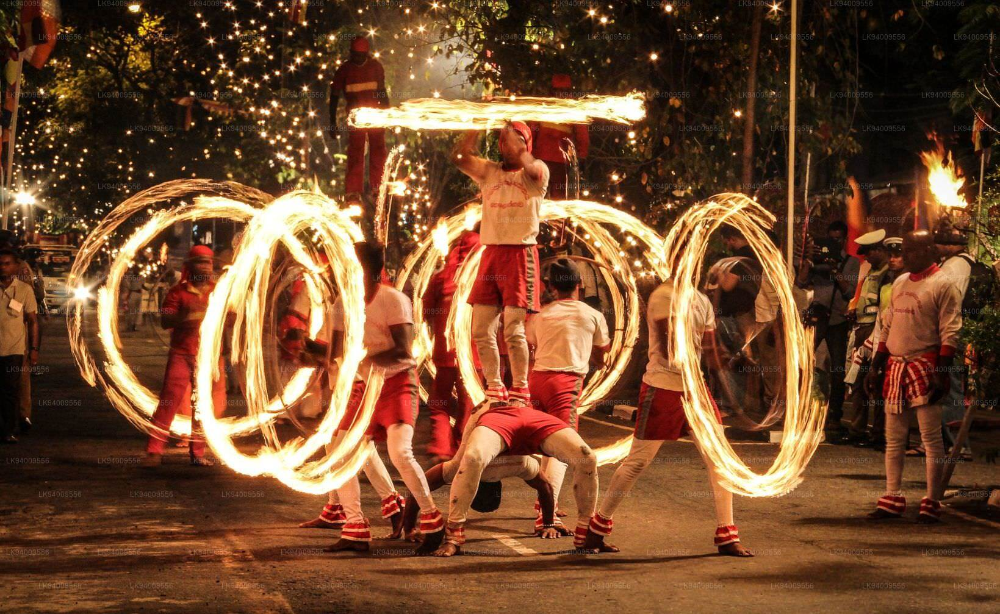
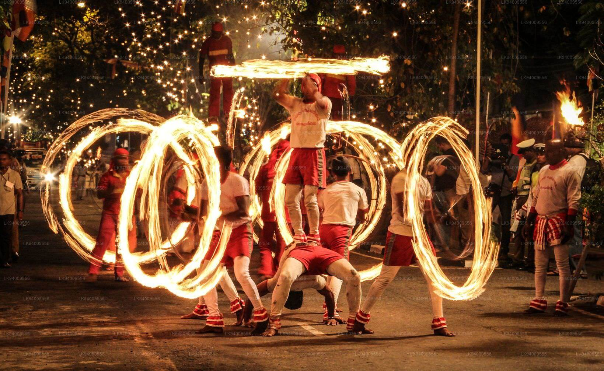
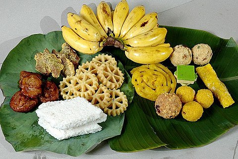
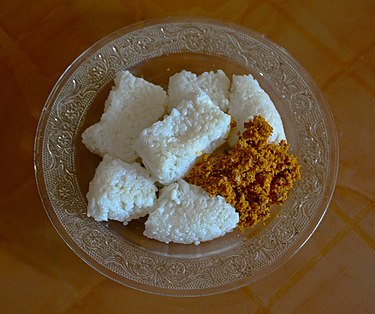
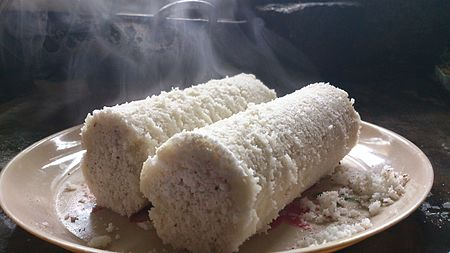
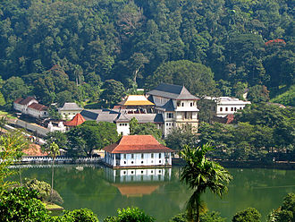
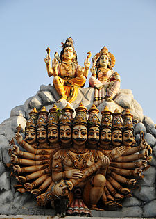
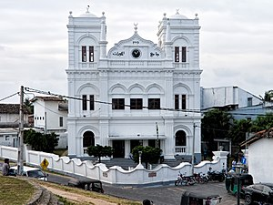
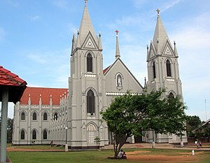

Home Wild life attractions Beaches Activities Heritage locations Hotel details Shop
AYUBOWAN !
...Welcome To SriLanka...
. Sri Lanka, once known as Ceylon and currently known as the Democratic Socialist Republic of Sri Lanka, is a South Asian island republic. It is located in the Indian Ocean, southwest of the Bay of Bengal and southeast of the Arabian Sea, with the Gulf of Mannar and the Palk Strait separating it from the Indian subcontinent. India and the Maldives have a maritime boundary with Sri Lanka. Sri Jayawardenepura Kotte serves as the country's legislative capital, while Colombo serves as the country's main metropolis and financial center.

...Culture of SriLanka...
. Sri Lankan culture is heavily inspired by Buddhism and Hinduism. Sri Lanka has two primary traditional cultures: Sinhalese (centered in Kandy and Anuradhapura) and Tamil (centered in Kandy and Anuradhapura) (centred in Jaffna). Since then, Tamils have coexisted with Sinhalese, and early mixing has rendered the two ethnic groups practically physically indistinguishable. Sri Lanka was known for its hydraulic engineering and architecture prowess in ancient times. Locals have been influenced by British colonial culture. The country's long life expectancy, excellent health standards, and high literacy rate are due to the country's rich cultural traditions, which are shared by all Sri Lankan cultures.
...Festivals...
...1.Esala perahera...
 

. Esala Perahera is a Buddhist celebration in Kandy held in July and August that features dances and adorned elephants.
...2.Sinhala & Tamil New Year...

. The Sinhalese New Year, also known as Aluth Avurudda in Sri Lanka, is a Sri Lankan holiday that commemorates the Sinhalese people's traditional New Year.
. Puthandu, also known as Puthuvarudam, or Tamil New Year, is the first day of the Tamil calendar year and is traditionally observed as a feast. The event is held on the first day of the Tamil month Chithirai, which corresponds to the solar cycle of the lunisolar Hindu calendar. Every year on the Gregorian calendar, it falls on or around April 14th. The traditional new year is held on the same day throughout South and Southeast Asia, but it is known by different names in different parts of the country, such as Vishu in Kerala and Vaisakhi or Baisakhi in central and northern India.
...Food...
...1.Kiribath...

. Kiribath is a rice-based traditional Sri Lankan meal. It's made by cooking rice with coconut milk, hence the name, and can be thought of as a rice cake or pudding.
...2.Pittu...

. Puttu, sometimes known as pittu, is a South Indian dish native to Kerala, Tamil Nadu, and parts of Karnataka, as well as Sri Lanka's Northern Province. In Tamil and Malayalam, puttu means "portioned." It's made of steamed ground rice cylinders stacked with coconut shavings, and it's sometimes filled with a sweet or savory filling. Puttu is typically served hot with sweet side dishes like palm sugar or banana, or savory side dishes such chana masala, chutney, rasam, or meat curries.
...Religion In SriLanka...
. The people of Sri Lanka follow a wide range of religions. 70.2 percent of Sri Lankans are Buddhists, 12.6 percent are Hindus, 9.7 percent are Muslims, and 9.4 percent are Christians, according to the 2012 census. Buddhism has been recognized the State religion of Sri Lanka, with particular advantages granted by the Sri Lankan constitution, such as the government's obligation to defend and promote Buddhist Dharma across the country. The constitution, on the other hand, guarantees religious freedom and equality for all citizens. According to a Gallup poll from 2008, Sri Lanka was the third most religious country in the world, with 99 percent of Sri Lankans stating religion is an essential part of their everyday lives.
...Buddhism...

. Sri Lanka's official religion is Theravada Buddhism, which is practiced by around 70.2 percent of the country's population. Arahath Mahinda, the son of Indian Buddhist ruler Ashoka, led the trip to Sri Lanka in 246 BCE, where he converted Devanampiya Tissa, the Sri Lankan king. Arahath Sanghamitra, King Ashoka's daughter, sent a Bodhi tree sapling from Buddha Gaya to Sri Lanka. In Sri Lanka, she also founded the Order of Nuns. The King Devanampiya Tissa planted a sapling of the Bodhi tree known as Jaya Sri Maha Bodhi at the Mahameghavana Park in Anuradhapura. Since then, the royal families have worked to promote Buddhism by assisting Buddhist missionaries and constructing monasteries.
...Hinduism...

. In Sri Lanka, Hinduism is mostly associated with the Tamil people and is concentrated in the Northern, Eastern, and Central Provinces. Due to Sri Lankan Tamil exodus and the repatriation of 'Indian' Tamils, the population has decreased since the 1981 census.
...Islam...

. By the seventh century, Arab traders had taken control of much of the Indian Ocean commerce, including Sri Lanka's. Many of these traders made their homes in Sri Lanka, spreading Islam. Many of the Arabs' Muslim descendants were persecuted when the Portuguese came in Sri Lanka in the 16th century, driving them to relocate to the Central Highlands and the east coast. Muslims in Sri Lanka now have the Muslim Religious and Cultural Affairs Department, which was founded in the 1980s to avoid the Muslim community from being isolated from the rest of the country. About 9.7% of Sri Lankans follow Islam now, with the majority coming from the island's Moor and Malay ethnic minorities.
...Christianity...

. Ceylon became a Crown colony in 1802 after the British evicted the Dutch in 1796. When the British took over Sri Lanka from the Dutch in the early 1800s, they brought with them Anglican and other Protestant missionaries. Sri Lanka is also home to the Salvation Army and Jehovah's Witnesses. From a high of 13% in 1891 to a low of 12.6 percent and 302,000 Christians, the percentage of Christians has steadily dropped. They made up 9.4% of the population in 2012. Christians were largely concentrated in the northwest of Sri Lanka by the 1980s, as well as in the capital, where they made up 10% of the population.